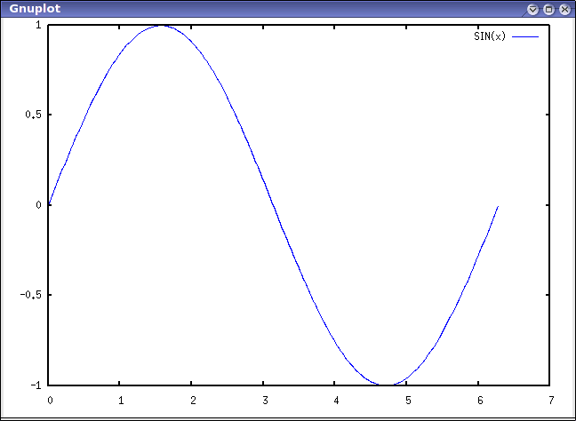

The Maxima-Gnuplot interface offers three terminal choices: default, ps and dumb.
plot2d(sin(x),[x,0,2*%pi]);

plot2d(sin(x),[x,0,2*%pi],[gnuplot_term,ps],[gnuplot_out_file,"sin.eps"]);

Click on the above image to see The actual postscript file.
plot2d(sin(x),[x,0,2*%pi],[gnuplot_term,dumb]);
1 ++--------+--$$$$$$$+---------+---------+---------+---------+--------++
+ $$$ $$$ + + + SIN(x) $$$$$$ +
| $$$ $$ |
| $$ $$$ |
0.5 ++ $$ $$ ++
| $$ $$ |
| $$ $$ |
| $$ $$ |
|$$ $$ |
0 $+ $$ $$ ++
| $$ $$ |
| $$ $$ |
| $$ $$ |
-0.5 ++ $$ $$ ++
| $$ $ |
| $$ $$ |
| $$ $$$ |
+ + + + +$$$$ +$$$ + +
-1 ++--------+---------+---------+---------+---$$$$$$$---------+--------++
0 1 2 3 4 5 6 7
Those of us who remember when “vt100” was not just a menu item in a terminal editor, but an actual thing that would hurt to drop on your foot, should find the following picture nostalgic.
The adaptive plotting routines (based on an algorithm from Yacas) allow plotting of functions with singularities.
plot2d([gamma(x),1/gamma(x)],[x,-4.5,5],[y,-10,10], [gnuplot_preamble,"set key bottom"]);

It is now possible to take advantage of the advanced features of Gnuplot. Note the tick labels on the horizontal axis in the following figure.
plot2d([cos(x),sin(x),tan(x),cot(x)],[x,-2*%pi,2*%pi],[y,-2,2],
[gnuplot_preamble,"set xzeroaxis; set xtics ('-2pi' -6.283, '-3pi/2' -4.712,
'-pi' -3.1415, '-pi/2' -1.5708, '0' 0,'pi/2' 1.5708, 'pi' 3.1415,'3pi/2' 4.712,
'2pi' 6.283)"]);
The postscript version of the previous figure can take advantage of Gnuplot's enhanced postscript terminal.
plot2d([cos(x),sin(x),tan(x)],[x,-2*%pi,2*%pi],[y,-2,2],
[gnuplot_preamble,"set xzeroaxis; set xtics ('-2{/Symbol p}' -6.283,
'-3{/Symbol p}/2' -4.712, '-{/Symbol p}' -3.1415, '-{/Symbol p}/2' -1.5708,
'0' 0,'{/Symbol p}/2' 1.5708, '{/Symbol p}' 3.1415,'3{/Symbol p}/2' 4.712,
'2{/Symbol p}' 6.283)"],[gnuplot_term,ps],[gnuplot_out_file,"trig.eps"]);

Click on the above image to see the actual postscript file.
The default three-dimensional plotting generates a mesh. It works with all versions of Gnuplot.
plot3d(atan(-x^2+y^3/4),[x,-4,4],[y,-4,4],[grid,50,50]);

Gnuplot 4.0 includes pm3d, which provides many advanced options for three- and four-dimensional plotting. Use of pm3d is turned off by default because Gnuplot 4.0 is not yet commonly installed. If Gnuplot 4.0 is installed, Maxima can take advantage of the features in pm3d.
The default plot with pm3d includes a mesh and a colored surface.
plot3d(atan(-x^2+y^3/4),[x,-4,4],[y,-4,4],[grid,50,50],[gnuplot_pm3d,true]);

Several variations are possible. Here is one with no mesh and contours on at the base.
plot3d(atan(-x^2+y^3/4),[x,-4,4],[y,-4,4],[grid,50,50],[gnuplot_pm3d,true], [gnuplot_preamble,"set pm3d at s;unset surface;set contour;set cntrparam levels 20;unset key"]);
The following variation includes the mesh and puts the colors on the base.
plot3d(atan(-x^2+y^3/4),[x,-4,4],[y,-4,4],[grid,50,50],[gnuplot_pm3d,true], [gnuplot_preamble,"set pm3d at b"]);
Some functions are too complicated to be practically visualized with a mesh.
plot3d(cos(-x^2+y^3/4),[x,-4,4],[y,-4,4],[grid,150,150]);

However, the above function can be effectively visualized using pm3d's “map view”.
plot3d(cos(-x^2+y^3/4),[x,-4,4],[y,-4,4], [gnuplot_preamble,"set view map; unset surface"], [gnuplot_pm3d,true],[grid,150,150]);